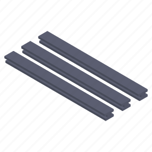

Beta
bonjour et bienvenue sur le site de Beta
les principale activite des beta Batement est l'achat et la revente des matiere premiere des usines de productions vers les magasins specialises et des entreprises de constructions. Par exemple, un des ses produits phares est les engrais biologiques qu'elle vendait a la grande distribution.

Ferraille
0,39$
Prix: 1 kilo de ferraille

engrais biologiques
30$
Prix: 1 kilo des engrais biologiques